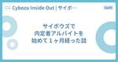

Cybozu Inside Out | サイボウズエンジニアのブログ
https://blog.cybozu.io/
サイボウズ株式会社、サイボウズ・ラボ株式会社のエンジニアが提供する技術ブログです。製品やサービスの開発、運用で得た技術情報やエンジニアの活動、採用情報などをお届けします。
フィード
kintone AI ラボリリース！大規模 SaaS への AI 機能導入で意識した設計と運用の工夫 1
1
Cybozu Inside Out | サイボウズエンジニアのブログ
こんにちは！ kintone 開発の生成 AI チームで EM をしている立山です。 今回は、4/15 にリリースした kintone AI ラボの設計・運用の工夫についてお話しします。 はじめに kintone AI ラボでは、専門知識がなくても誰でも活用できる AI をコンセプトに、 kintone 内のデータ活用を促進する AI 機能や、kintone の利用者の裾野を広げる AI 機能を中心に提供しています。 現在は、以下の 2 つの生成 AI 機能を提供しています： 検索 AI：kintone 内のデータで簡単に RAG（Retrieval-Augmented Generation）…
8時間前
【連載】Cybozu.comクラウド基盤の全貌 第3回 Neco のネットワーク 25
Cybozu Inside Out | サイボウズエンジニアのブログ
はじめに クラウド基盤本部でサイボウズの Kubernetes 基盤である Neco の開発・運用を担当している杉浦です。 前回の記事では Neco について、サーバ管理の方法や自社製の Kubernetes エンジンである CKE を紹介しました。今回は Neco のネットワークに注目して、CKE によって構築した Kubernetes クラスタがどのようにしてクラスタ内外と通信しているかを紹介します。 Kubernetes クラスタのネットワークについて Neco のネットワークについて紹介する前に、まず一般的な Kubernetes におけるネットワークについて紹介します。Kuberne…
2日前

サイボウズで内定者アルバイトを始めて１ヶ月経った話 1
Cybozu Inside Out | サイボウズエンジニアのブログ
１. はじめに 📕 こんにちは！サイボウズ 2026年度新卒で今年の４月からiOSエンジニアとして内定者アルバイトをしています。ちゃんくろです！ 今回は４月から１ヶ月が経って、内定者アルバイトでどのようなことをしたのかを振り返る機会があり、そこでこれまでに取り組んできたことについて記事にすることになりました。 ⅰ. 内定者アルバイトをすることになったきっかけ 内定をいただいたときにはSwift歴が１年未満だったというのもあり、純粋な技術力の懸念は個人的に大きいと感じていました。個人開発では特定のアーキテクチャをメインに一定のレベルで頭打ちになってしまっているような意識がありました。そこで人事の…
3日前

Garoon開発24卒 1年目を振り返って
Cybozu Inside Out | サイボウズエンジニアのブログ
Garoon チームにジョインした4人の24新卒のメンバー、Fuji（Webエンジニア）、yuki（プロダクトデザイナー）、reo（QAエンジニア）、Atria（モバイルエンジニア）が、それぞれの1年目を振り返ります。 サイボウズでの新卒1年目の様子をぜひご覧ください！ Garoonとは、サイボウズが開発、提供している中大規模企業向けの多機能グループウェアです。詳しくは製品ページをご覧ください。 garoon.cybozu.co.jp Fuji 自己紹介 Webアプリケーション職能のFujiです。開発本部、主にGaroonの性能改善と性能全般に関するタスクを行うNozomiチームに所属していま…
20日前
エンジニアインターンシップ2025を開催します！
Cybozu Inside Out | サイボウズエンジニアのブログ
こんにちは！エンジニアインターン運営チームです。 サイボウズでは毎年夏に、エンジニア/デザイナー向けサマーインターンシップを開催しています。今年も昨年に引き続き、フルリモートでインターンを開催します！ サイボウズインターンシップ2025 ロゴ
22日前
JaSST'25 Tokyo 参加レポート
Cybozu Inside Out | サイボウズエンジニアのブログ
こんにちは！サイボウズ QAエンジニアの小竹です。 サイボウズは、3/27-3/28に開催されたJaSST'25 Tokyoにゴールドスポンサーとして協賛しました。 弊社のセッションにご参加いただいたみなさま、ブースにお立ち寄りくださったみなさま、本当にありがとうございました！ 今回の記事ではJaSST'25 Tokyoにおけるサイボウズの発表内容・資料を共有し、あわせてイベント期間中のブースの様子をご紹介します。 今年はテクノロジーセッションと事例セッションにサイボウズのメンバーが登壇いたしました。 1. テクノロジーセッション 無理なく続ける、サイボウズの社内勉強会@斉藤 裕希 speak…
22日前
中高生向けのオンラインイベントで、プロダクトデザイナーの河合佑希が講演しました！
Cybozu Inside Out | サイボウズエンジニアのブログ
こんにちは！サイボウズの開発本部のファン・採用候補者・従業員の体験向上を目指す、People Experienceチーム所属の hokatomo ( @tomoko_and )です。 2025年4月に開催されたNPO法人Waffle主催の「Waffle Club」というイベントにサイボウズは協賛し、同イベントにてプロダクトデザイナーの河合佑希 ( @snowyk25 ）が参加者の中高生の皆さんに向けて講演しました。 Waffle Clubについて NPO法人Waffleの詳細 協賛・登壇の背景 当日の様子 河合から中高生の皆さんへ話した内容 参加者の皆さんからの感想（一部抜粋） 終わりに Wa…
24日前
『MCPやっていき！！』という勉強会を開催しました！
Cybozu Inside Out | サイボウズエンジニアのブログ
こんにちは！kintoneのAndroidエンジニア、トニオ（@tonionagauzzi）です。 今回は、先日開催したMCP（Model Context Protocol）に関する勉強会のレポートをお届けします！ 先日、私たちはプロダクト横断で「MCPやっていき！！」という勉強会を開催しました。この勉強会では、MCPについて参加者全員が理解を深め、業務効率向上などの良い効果を得られることを目的としました。講師は、Androidエンジニアの宮﨑（@Tirobou999）が担当しました。 先日、MCPに関する以下の記事も出ましたので、あわせて読んでいただけたらと思います。 blog.cybozu…
1ヶ月前
MCPサーバ（モック）を生成AIにサクッと作ってもらう
Cybozu Inside Out | サイボウズエンジニアのブログ
サイボウズ・ラボの中谷です。サイボウズの「AIやっていき」というチームにも所属しています。このチームは、サイボウズ社内にAIの新技術を紹介したり、AIに関するPoCを作って導入のイメージを共有したりと、チーム横断的に活動しています。4月15日に発表されたばかりのkintone AIラボにも協力しています。さて、最近AI界隈では MCP（Model Context Protocol）がとても話題になっていますね。github.comこれは Anthropic 社が提案している AI（大規模言語モデル）と AI 以外のリソース（データやサービス）を接続するベンダー非依存の通信規格（プロトコル）です…
1ヶ月前
Jetpack Composeで簡単に吹き出しを表示できるライブラリを作りました
Cybozu Inside Out | サイボウズエンジニアのブログ
はじめに こんにちは、Androidエンジニアの宮﨑(@Tirobou999)です。 このたびJetpack Composeで、簡単に吹き出しを表示できるライブラリを作りました🎉 私が担当しているサイボウズOfficeのモバイルアプリで、 吹き出しを表示して機能の説明をユーザーに提示したいという要件がありました。 Androidで吹き出しを表示する場合、PopupのAPIが公式で用意されていますが、 表示位置の計算を自前で行う必要があり面倒 吹き出しの枠線の描画も自前で行う必要があり、さらに面倒 これらの理由から、Popupをラッパーして簡単に吹き出しを表示できるライブラリを独自で実装しました…
1ヶ月前
Go で新しいサービスを実装する際に意識したポイント
Cybozu Inside Out | サイボウズエンジニアのブログ
こんにちは！ソフトウェアエンジニアとして活動している @nissy_dev です。 サイボウズでは、各プロダクトを新しいインフラ基盤に移行する取り組みを進めています。この記事では、その一環としてサイボウズ Office とメールワイズのテナント管理ロジックを Go で新たに実装する際に意識したポイントについて紹介します。 目次 テナント管理ロジックのオーナシップの移行 Go を利用した新しいサービスのモノレポ開発 ディレクトリ構成 ビルドやリントツール エラーハンドリング ログとメトリクス テスト CI まとめ テナント管理ロジックのオーナシップの移行 現在、Cybozu では各プロダクトを新…
1ヶ月前
【連載】Cybozu.comクラウド基盤の全貌 第2回 サイボウズのKubernetes基盤「Neco」の紹介
Cybozu Inside Out | サイボウズエンジニアのブログ
はじめに クラウド基盤本部で、インフラ基盤「Neco」の開発と運用を担当している三村と竹村です。 サイボウズでは、Kubernetesを用いたオンプレミスのインフラ基盤「Neco」の開発・運用をしています。 Necoは、kintoneやGraoon、サイボウズOfficeなど、サイボウズの製品を提供するための基盤で、旧基盤からの移行が進み本格的な稼働を行っています。 2025年4月現在でサーバー数千台規模のKubernetesクラスタとなっています。 今回と次回の2記事に渡って、「Neco」について紹介していきます。 1つ目の記事(この記事)では、Necoの概要と、運用自動化の取り組みについて…
1ヶ月前
「第14期サイボウズ・ラボユース成果発表会」開催
Cybozu Inside Out | サイボウズエンジニアのブログ
サイボウズ・ラボの星野です。 今回は2025年3月28日にサイボウズ東京オフィスで開催された第14期サイボウズ・ラボユース成果発表会の報告をします。 サイボウズ・ラボユース サイボウズ・ラボユースは日本の若手エンジニアを発掘し、育成する場を提供する制度です。インターンと似ていますが、最長で1年間という長期サポートと、ラボユース生が自分でテーマを決める点が特徴です。 コロナ禍以降、普段の活動はフルリモートで行うスタイルが定着しましたが、 昨年度から再開された夏の合宿と、春の成果発表会はオンサイトで集まって交流する場となっています。 サイボウズ・ラボユース夏合宿2024を開催しました - Cybo…
1ヶ月前
社内でCTFを開催してみた
Cybozu Inside Out | サイボウズエンジニアのブログ
こんにちは。開発本部内でセキュリティ活動を行っているPSIRTです。PSIRTで初の社内CTF（Capture The Flag）を開催したので、本記事ではその開催準備の様子や開催中の様子を紹介します。 開催背景 2025年2月4日から6日にかけて、開発・運用系のメンバーが一同に集まる「開運冬まつり」が開催されました。このイベントは、部門やチーム、職能を超えて社員同士が交流し、新たな視点や刺激を得ることを目的としています。 昨年の開運冬まつりの様子は以下のブログを御覧ください。 blog.cybozu.io このイベントのコンテンツとして、PSIRT有志のメンバーで初の社内CTFを開催すること…
2ヶ月前
【連載】Cybozu.comクラウド基盤の全貌
Cybozu Inside Out | サイボウズエンジニアのブログ
イントロダクション クラウド基盤本部の吉川拓哉です。「Cybozu.comクラウド基盤の全貌」と題して私たちが運用している基盤を連載形式で紹介することになりました。第1回となる本記事はイントロを兼ねたサイボウズのクラウド基盤の概要説明です。 サイボウズのクラウド サイボウズが自社クラウド「cybozu.com」でサービス提供を開始したのは2011年。パッケージ提供していたグループウェア製品であるOfficeやGaroon、メールワイズをクラウド版として移植し、業務アプリケーションを手軽に開発できるkintoneをクラウド製品として新たに開発するなど、クラウドを通じてより多くのユーザーにサービス…
2ヶ月前
サイボウズは JaSST'25 Tokyo で協賛＆登壇します！
Cybozu Inside Out | サイボウズエンジニアのブログ
こんにちは、QAエンジニアの小竹です。 サイボウズは 2025年3月27日(木)〜28日(金)に開催されるソフトウェアテストのシンポジウムJaSST'25 Tokyoに、ゴールドスポンサーとして協賛します。 今年はテクノロジーセッションと事例セッションに弊社のメンバーが登壇いたしますので、本記事ではその紹介をさせてください！ サイボウズ社員が登壇するセッション紹介 テクノロジーセッションに登壇します！ 以下のテクノロジーセッションに登壇します。ぜひご視聴ください。 C3-1）無理なく続ける、サイボウズの社内勉強会 日時 3月27日(木) 14:30〜 登壇者 斉藤 裕希 内容紹介 サイボウズに…
2ヶ月前
『モバイルまつり』と題してモバイルエンジニアが集合し、交流会とOSTをしました！
Cybozu Inside Out | サイボウズエンジニアのブログ
こんにちは！kintoneのAndroidエンジニア、トニオ（@tonionagauzzi）です。 今回は、サイボウズのAndroidエンジニアとiOSエンジニアがプロダクトを超えて集まり、オフライン交流会をしたことを共有します。 モバイルエンジニア集合写真 概要 弊社では、半年に1度『モバイルまつり』と題して、東京オフィスに集合してオフラインで交流しています。参加必須ではありませんが、毎回好評で、ほとんどのモバイルエンジニアが参加します。 テーマ 互いを知る、話す 開催目的 モバイルエンジニア同士が交流し、相互理解を深め、信頼関係を築く それぞれが今抱えている問題意識や悩みに耳を傾け、共感す…
2ヶ月前
25新卒エンジニア5人の内定者アルバイト体験記
Cybozu Inside Out | サイボウズエンジニアのブログ
こんにちは、サイボウズ 25卒エンジニアチームです。 今回、サイボウズの25卒エンジニアの中で内定者アルバイトを行っているメンバーの中から、内定者バイト体験記を書いてくれる人を募ってこの記事にまとめることにしました。 Webアプリケーションエンジニア、フロントエンドエンジニア、生産性向上エンジニア、プロダクトデザイナー、QAエンジニアの5人が集まってくれたので、それぞれが書いたものを順番に紹介していきます。 Webアプリケーションエンジニア くらっち Webアプリケーションエンジニアとして内定をいただいているくらっちです。 私は、kinotneのアプリ設定画面を改善するチームに週2回のシフトで…
3ヶ月前
コドモンとサイボウズで、XPとスクラムのアプローチの違いを語るイベントを開催しました！
Cybozu Inside Out | サイボウズエンジニアのブログ
こんにちは。kintone開発のAndroidエンジニア、トニオ（@tonionagauzzi）です。 本日は、株式会社コドモンのオフィスでイベントを開催したことを報告します！ 目指している姿は同じ！ XPとスクラムのそれぞれのアプローチの違いを語ります - connpass コドモンとサイボウズの2社による、初の合同開催イベントでした。 開催の経緯 コドモンさんとはKotlin Festでお互いスポンサーして以来交流しており、合同イベントやりたいですね〜と話していました。それがめでたく開催できたという経緯です。最初に交流させていただいた私にとってはとても感慨深いイベントでした！ 会の詳細 開…
3ヶ月前
SwiftUI View Coding Guidelinesを公開しました
Cybozu Inside Out | サイボウズエンジニアのブログ
こんにちは、iOS Developerの@el_metal_です。 SwiftUIのView実装のためのガイドラインを作成・公開したので紹介します。 SwiftUI View Coding Guidelines SwiftUI View Coding Guidelinesとは SwiftUI View Coding Guidelinesは優れたView実装のためのガイドラインです。 SwiftUIの初学者向けドキュメントはSwiftUI Pathwayを中心に充実してきています。 一方、プロダクトコードで求められるmaintainabilityを持つためのプラクティスを説明するドキュメントは不…
3ヶ月前
フロントエンドでの段階的なコード分割による複雑さの解消
Cybozu Inside Out | サイボウズエンジニアのブログ
はじめに kintoneチームの前田です。 kintoneチームはClosureで書かれているフロントエンドのコードを段階的に分割することに取り組んでいました。 その中で複雑さの解消を実感する機会がありました。 この複雑さはClosureに特有というわけでもなく、形を変えてサーバーサイドでも生じそうなものでした。 今回の記事ではそのような複雑さを紹介しようと思います。 ページ単位でのコード分割による複雑さの解消 コード分割とは、kintoneの機能に沿ったパッケージやディレクトリにコードが配置され、コード間の依存も機能に沿って制限された状態にすることです。 このような取り組みの背景やコード分割…
3ヶ月前
WingArc1st、freee、サイボウズの3社でアジャイルOST交流会を実施しました！
Cybozu Inside Out | サイボウズエンジニアのブログ
こんにちは。kintone開発のAndroidエンジニア、トニオ（@tonionagauzzi）です。 本日は、WingArc1stさん、freeeさんとサイボウズでOST（Open Space Technology）交流会を開催したことを報告します！ 目次 開催の経緯 会の詳細 開催日時 テーマ タイムテーブル 当日の様子 乾杯！ 会の説明 LT大会 barusさん（WingArc1st） miyachiさん（freee） とうま（サイボウズ） OST大会 OSTについての説明 OSTレポート 「人の価値観の違いと成長支援」 「アウトプットしてもらう為には？」 「提供価値の効果測定してますか…
3ヶ月前
promptfoo でお手軽プロンプト検証
Cybozu Inside Out | サイボウズエンジニアのブログ
こんにちは！ kintone 開発チームの福田（@man_2_fork）です。 kintone では AI を使った RAG 機能をベータ版として提供しています。機能自体については、プレスリリースをご覧ください。 さて、AI 機能の開発のためには複数のモデルやプロンプトの検証が欠かせません。このときに promptfoo という LLM 検証用のツールを使用しました。このツールを使うと簡単な検証が行えたり、複雑な検証をプラグイン機構で行えたりと柔軟かつ非常に便利でした。 この記事では promptfoo の基本的な部分から少し複雑なユースケースまでご紹介していこうと思います。 モチベーション …
4ヶ月前
Sansan vs サイボウズという技術イベントを合同で開催しました
Cybozu Inside Out | サイボウズエンジニアのブログ
みなさんこんにちは。生産性向上チームの平木場とkintone開発の三村です。2024/12/09に Sansan株式会社さんと合同で技術イベントを開催しました。 その名も「Sansan VS サイボウズ - 品質向上Tips冬祭り」です。イベントの内容と、イベントの前後で両社の交流会を行ったので、ここに記します。 sansan.connpass.com
4ヶ月前
生成 AI 技術を活用した kintone の新機能とシステム概要の紹介
Cybozu Inside Out | サイボウズエンジニアのブログ
はじめに こんにちは！ kintone 開発チームで EM をしている池田 (motacapla) です。 今回は、生成 AI 技術を活用した kintone の新機能について紹介します。 本機能は、Cybozu Days 2024 での Keynote と共にプレスリリースが発表されました。 topics.cybozu.co.jp こちらの機能を実現しているシステムの概要についても触れます。 用語 kintone AI アシスタント (仮称) とは 生成 AI 技術の Retrieval-Augmented Generation (RAG) を活用した新機能になります。 チャット形式で会話可…
4ヶ月前
大きな機能のコード分割を片手間で完了させることができた要因
Cybozu Inside Out | サイボウズエンジニアのブログ
初めに kintoneチームの前田です。 kintoneはサーバーサイドがJavaで書かれていて、最近ではこれが結構な分量になっており開発上の障壁となっています。 その解消のため、機能毎にコードを分割して管理するコード分割という取り組みを進めています。 コード分割については以下の記事で紹介されています。 blog.cybozu.io この度kintoneのアプリ設定機能のコード分割が完了しました。 アプリ設定機能は主にアプリの管理者が使う管理用の機能です。 kintoneのコア機能の一つでコード量も比較的大きな部分になっています。 分割完了後のコードの詳細や分割以降の取り組みについては、JJU…
4ヶ月前
大規模リファクタリングの一歩目の選択肢 ~コード分割~
Cybozu Inside Out | サイボウズエンジニアのブログ
kintone 新機能開発チームでエンジニアをしているぶっちーです。 以前、以下の記事でサーバーサイドコード分割というプロジェクトの取り組みについて紹介しました。 blog.cybozu.io このプロジェクトが終了した後も継続してアプリ設定機能に関するコードの分割に取り組みました。その結果、約 2 年の月日を経て、無事約 20 個ある全ての機能の分割を終えることができました。そして、分割を終えたことで普段の開発において開発効率の向上につながるメリットを感じられています。 この記事では、実際の機能を例にどのようにコード分割を行ったのか、分割を終えたコードで開発してみてどのようなメリットを感じて…
4ヶ月前
CODE BLUE 2024参加レポート
Cybozu Inside Out | サイボウズエンジニアのブログ
はじめに CyberTAMAGO Prompt Hardenerの発表 その他の発表 発表・ワークショップなど Hacking Google - Lessons learned running and growing an internal red team SBOM and Security Transparency - How it all fits together SecuriTTX for Everyone (Tabletop Exercise)! Android Security Hacker's Guide スポンサーブース おわりに はじめに こんにちは、PSIRTの湯浅です。…
4ヶ月前
2024年 Android のリファクタリングにおいて合意を助けた ADR 5選
Cybozu Inside Out | サイボウズエンジニアのブログ
こんにちは！kintone 開発チームの Android エンジニア、トニオ（@tonionagauzzi）です。 本日は、Android Advent Calendar 2024 の記事として発信します！ 私たちは現在、kintone の Android アプリを継続提供し、かつプロダクト価値を高めていくためにリファクタリングを行っています。その際、ADR を起票することでチーム内でリファクタリングの合意形成を取っています。 この記事では、ADR とは何か？という話と、今年書いてよかった ADR を5つ紹介します。 1. ADR とは ADR (Architecture Decision R…
5ヶ月前
ローカライズチームが開発部署に所属するということ
Cybozu Inside Out | サイボウズエンジニアのブログ
こんにちは。ローカライズチームの殿岡（@txdriet）です。このブログは、テクニカルライター/ローカライズ リレーブログの8本目の記事です。 ローカライズチームは、名前のとおり製品のローカライズを担うチームです。開発部署に所属し、様々な関係者と連携しながら業務を行っています。 今回は、開発部署にローカライズチームが存在する意義について考えてみたいと思います！ ローカライズチームの役割 ローカライズチームは、製品のグローバル展開を支える重要な存在です。 主な業務は製品文言やオンラインヘルプのローカライズですが、それだけにとどまりません。 製品のグローバル展開を成功させるために、他社製品の動向を…
5ヶ月前